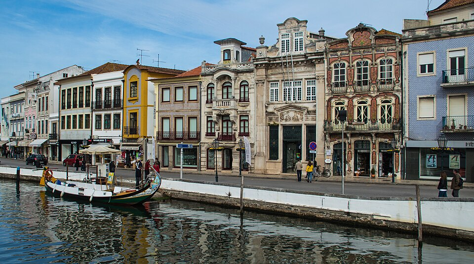

Turismo na cidade de Aveiro
Aveiro
Aveiro é uma cidade portuguesa e capital da sub-região da Região de Aveiro, pertencendo à região do Centro e ao Distrito de Aveiro e ainda à antiga província da Beira Litoral. A cidade possui 62.653 habitantes (2021)[1] sendo sede do Município de Aveiro que tem uma área total de 197,58 km2[2], 88 154 habitantes[3] em 2024 e, por isso, uma densidade populacional de 446 hab./km2, estando subdividido em 10 freguesias[4]. O município é limitado a norte pelo município da Murtosa, a nordeste por Albergaria-a-Velha, a leste por Águeda, a sul por Oliveira do Bairro, a sudoeste por Vagos e por Ílhavo e a oeste com o Oceano Atlântico, A cidade é um importante centro urbano, portuário, ferroviário, universitário e turístico. Fica situada a cerca de 63 km a noroeste de Coimbra, de 70 km a sul do Porto, e a 255 km de Lisboa.
Ilha dos puxadoiros

imagem de marcação de cheias